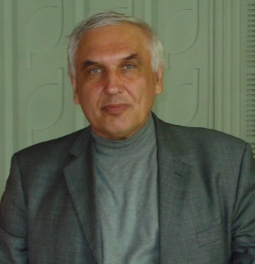

ЗАЧЕМ МЫ ЭТО СДЕЛАЛИ?
Данный проект был сделан и реализован студентами группы КБИКС-19-2 , ради лучшего ознакомления с предметом “Архитектура компьютерных систем” посредством объединения и комбинирования учебного материала, получаемого в течение учебного семестра. Основным вдохновителем является Александр Алексеевич Торба, что всегда был рад, а порой и призывал к распространению учебного материала между студентами. Хочется сказать, что лучше уж студент готовится на этом сайте по материалам преподавателя, чем ищет ответы через поисковую строку гугла, ведь находимые там ответы могут быть порой ложными, или часто отдаленными от правильной мысли.
НАШ ПРЕПОДАВАТЕЛЬ
- 
-
Александр Алексеевич Торба
Родился 30 августа 1950 года в г. Харьков, УССР. Знание языков: русский, украинский, немецкий (со словарем), ассемблер (свободно может говорить на нем с учеником). Кандидат технических наук, доцент, профессор кафедры ЭВМ.
Образование
1972 г. – окончил Харьковский институт радиоэлектроники; квалификация – радиоинженер; специальность – радиотехника. 1978–1980 гг. – обучение в аспирантуре Харьковского института радиоэлектроники; специальность: радиотехнические системы специального назначения, научный руководитель: доцент Лагутин Михаил Федорович. 1988 г. – кандидат технических наук, Харьковский авиационный институт, специальность – радиотехнические системы специального назначения. Спецтема. Научный руководитель: доцент Лагутин Михаил Федорович. 1999 г. – доцент кафедры электронных вычислительных машин ХГТУРЭ. Это отличный человек, профессионал своего дела.
НАУЧНО-ПЕДАГОГИЧЕСКАЯ ДЕЯТЕЛЬНОСТЬ
1980-1988 гг. – младший научный сотрудник. 1988 г. – старший научный сотрудник. 1988-1993 гг. – ассистент кафедры технической электроники. 1993 г. – старший преподаватель кафедры электронных вычислительных машин. 1993-2015 гг. – доцент кафедры электронных вычислительных машин. С 2015 г. – профессор кафедры электронных вычислительных машин.
УЧЕБНАЯ РАБОТА
Является автором лекционных курсов по дисциплинам: электроника и схемотехника; автоматизация производства компьютерной аппаратуры; микропроцессоры в системах обработки данных и управления; архитектура компьютеров; аппаратные средства компьютерных сетей; компьютерная электроника и схемотехника; защита информации в компьютерных системах и сетях; микроконтроллеры и микроконтроллерные системы; аналоговая и цифровая схемотехника компьютеров; архитектура компьютерных систем. Подготовил 3 учебника и 8 конспектов лекций, 12 методических указаний к лабораторным работам, 4 методических указаний к практическим занятиям. Был руководителем более 150 дипломных проектов.
НАУЧНАЯ РАБОТА
1972–1980 гг. – инженер, старший инженер Харьковского национального университета радиоэлектроники. Ответственный исполнитель госбюджетных и хоздоговорных НИР. Научные интересы: цифровая обработка сигналов на основе микропроцессоров и микроконтроллеров, генерация и тестирования свойств последовательностей случайных чисел. Имеет более 100 публикаций, более 30 патентов и авторских свидетельств.
ОРГАНИЗАЦИОННАЯ РАБОТА
2016-2017 гг. — заместитель заведующего кафедры ЭВМ по научной работе. В 2010-2014 гг. — председатель государственной экзаменационной комиссии по специальности «Эксплуатация интеллектуальных компьютерных систем и сетей» в Харьковском компьютерно-патентном колледже.
НАГРАДЫ И ПРЕМИИ
Звание «Изобретатель СССР», 1982 г.
ХОББИ И УВЛЕЧЕНИЯ
Путешествия, музыка, юмор, радиоэлектроника, архитектура компьютерных систем.
В двух словах от себя
Всем известно, что преподаватели бывают очень разные. К одним летишь на крыльях любви (таких мало), вторые – тоскливые и не рады процессу преподавания, третьи – злые и любят ощущать доминацию над студентом. Но Александр Алексеевич является ярким представителем первого типа, он с теплом относится к студентам, находит альтернативные пути донесения информации посредством историй и примеров из жизни. Иногда может разрядить напряженную обстановку на экзамене или защите лабораторных работ прибегнув к юмористической истории, так же часто они являются подсказками к правильному ответу на вопрос. Глядя на преподавателя такого уровня, все еще ощущается задор и желание донести информацию, чтоб студент её понял, всегда готов ответить на вопросы и помочь разобраться в непонятных моментах. Если подводить итог от общения с таким преподавателем, то хочется сказать огромное спасибо, за интересное изложение и современность материала по, казалось бы, старым темам. Побольше бы таких преподавателей, как Александр Алексеевич Торба.
Над сайтом трудились студенты КБИКС-19-2 и один бедолага с АКТСИ-19-1
- Кісіль Маским Сергійович
- Рутковський Максим Віталійович
- Боровський Олександр Євгенович
- Винник Іван Ростиславович
- Гальченко Анна Ігорівна
- Гаража Роман Юрійович
- Грасмік Софія Володимирівна
- Зубрич Артем Віталійович
- Рибаков Артем Андрійович
- Абазян Саркіс Ромікович